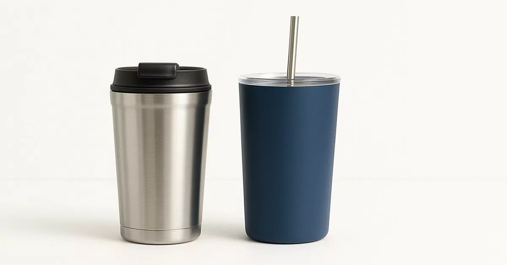
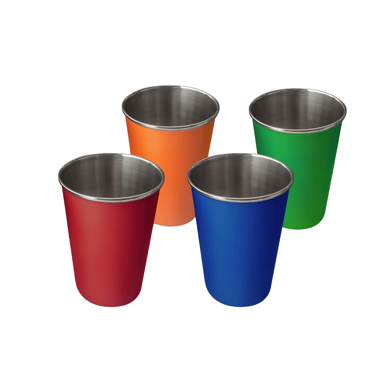

<!DOCTYPE html>
<html lang="en">
<head>
    <meta charset="UTF-8">
    <meta name="viewport" content="width=device-width, initial-scale=1.0">
    <title>Document</title>
</head>
<body>
    
</head>
</body>
<nav>
    <a href="index.html">home</a>
     <a href="services.html">services</a>
    <a href="enquiry.html">enquiry</a>
     <a href="aboutus.html">aboutus</a>
    <a href="contactus.html">contactus</a>
    
</nav>
<body>
</html>
<!DOCTYPE html>
<html lang="en">
<head>
    <meta charset="UTF-8">
    <meta name="viewport" content="width=device-width, initial-scale=1.0">
    <title>Sip & Sack Co. | Services</title>
</head>
<body>


    <!DOCTYPE html>
<html lang="en">
<head>
    <meta charset="UTF-8">
    <meta name="viewport" content="width=device-width, initial-scale=1.0">
    <title>Sip & Sack Co. | Services</title>
</head>
<body>
    <!-- Services & Product Showcase -->
    <section>
        <h2>Our Services &amp; Product Options</h2>
        <p>We offer customized printing and design services on high-quality everyday lifestyle products[cite: 4]. Below are our available tumbler styles and color options:</p>

        <!-- Tumbler Showcase Gallery -->
        <div>
            <h3>Tumbler Styles &amp; Color Choices</h3>
            
            <article>
                <figure>
                    <figcaption>
                        <h4>Insulated Stainless Steel &amp; Straw Tumblers</h4>
                        <p>Durable double-wall travel mugs and straw-lid tumblers designed to keep drinks hot or cold[cite: 1, 6].</p>
                    </figcaption>
                    
                    
                </figure>
            </article>

            <article>
                <figure>
                    <figcaption>
                        <h4>Assorted Stainless Steel Pint Cups</h4>
                        <p>Vibrant matte-finish stainless steel cups available in red, orange, blue, and green for custom printing[cite: 1].</p>
                    </figcaption>
                    
                    
                </figure>
            </article>

            <article>
                <figure>
                    <figcaption>
                        <h4>Multi-Color Reusable Cold Cups</h4>
                        <p>Colorful stacked cups with matching lids and reusable straws, ideal for everyday use and custom text[cite: 1, 6].</p>
                    </figcaption>
                    
            
                </figure>
            </article>
        </div>

        <hr>

        <!-- Main Services Description -->
        <div>
            <h3>What We Offer</h3>

            <article>
                <h4>1. Custom Product Printing</h4>
                <p>We personalize stainless-steel tumblers, canvas tote bags, and enamel pin badges[cite: 1, 4]. You can print names, quotes, images, or business logos on any product[cite: 1, 4].</p>
            </article>

            <article>
                <h4>2. Corporate &amp; Event Gifts (Bulk Orders)</h4>
                <p>We help small businesses, schools, and event planners create branded gift packages for promotional events, conferences, or employee gifts[cite: 1, 4].</p>
            </article>

            <article>
                <h4>3. Product Design Tool (Online Preview)</h4>
                <p>Our easy online tool allows you to type your custom text, choose colors, and upload your logo to see a live preview of your item before buying[cite: 1, 4].</p>
            </article>

            <article>
                <h4>4. Safe Shopping &amp; Automated Order Tracking</h4>
                <p>Enjoy quick checkout with credit cards, Instant EFT, and PayFast[cite: 1, 4]. Track your order status automatically from order placement to final delivery[cite: 1, 4].</p>
            </article>
        </div>
    </section>

    <hr>

    <!-- Footer -->
    <footer>
        <p>&copy; 2026 Sip &amp; Sack Co. - Motherwell, Eastern Cape, South Africa[cite: 2].</p>
        <p><a href="contact.html">Need help? Contact our support team</a></p>
    </footer>

</body>
</html>
